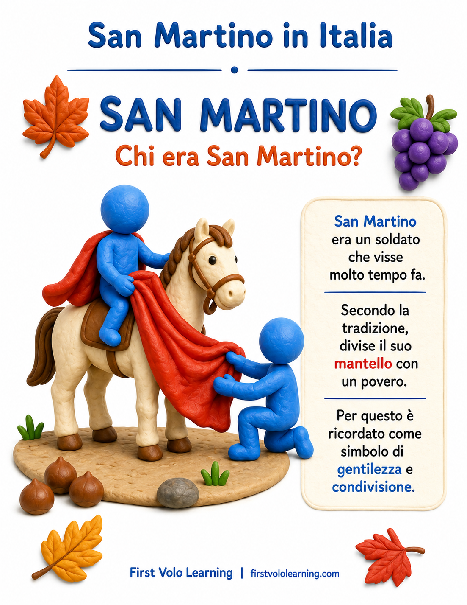
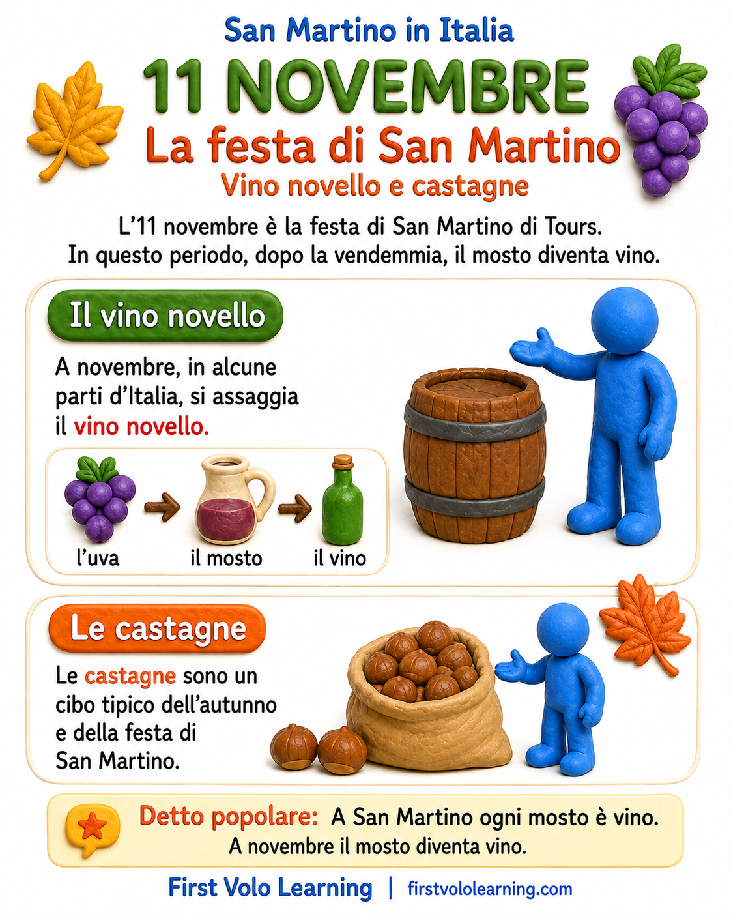
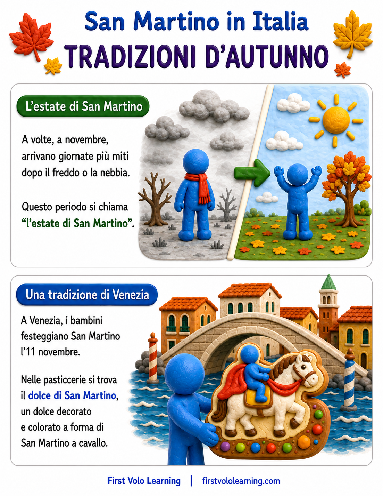
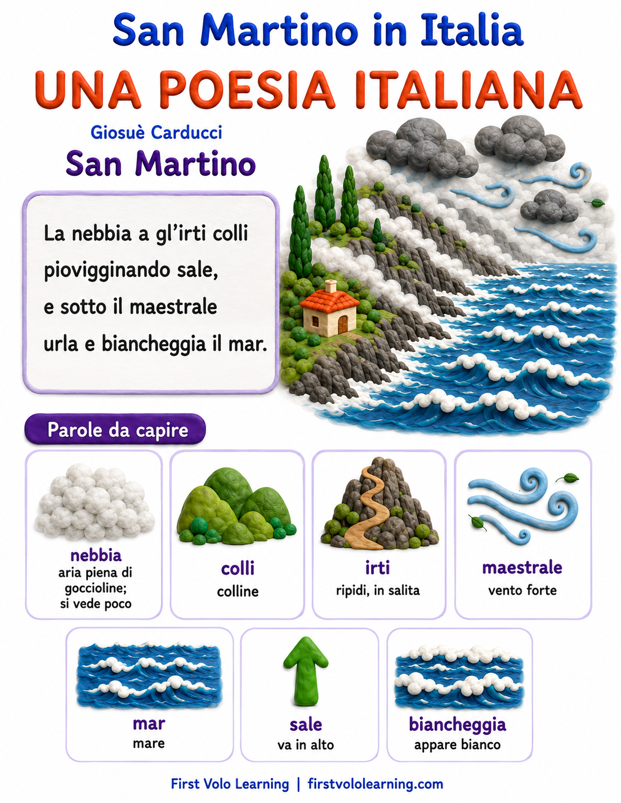

🍁 La festa di San Martino
Saint Martin's Day · 11 novembre




🎨 Il dolce di San Martino da colorare · Coloring Page
Colora il tradizionale dolce veneziano a forma di San Martino a cavallo.
🍁 San Martino, l'autunno e la poesia · Saint Martin, Autumn & Poetry
Italiano: L'11 novembre si celebra San Martino di Tours. La tradizione ricorda il gesto con cui condivise il suo mantello con un povero. In molte parti d'Italia questa ricorrenza è legata anche al vino nuovo, alle castagne e all'“estate di San Martino”. A Venezia è conosciuto anche il dolce di San Martino. L'ultima pagina presenta un breve estratto della poesia San Martino di Giosuè Carducci.
English: Saint Martin of Tours is celebrated on November 11. Tradition remembers his act of sharing his cloak with a person in need. In many parts of Italy, the day is also connected with new wine, chestnuts, and the mild spell known as l'estate di San Martino. Venice also has its distinctive dolce di San Martino. The final page introduces a short excerpt from Giosuè Carducci's poem San Martino.
🌱 Pensa · Think
Quali immagini dell'autunno trovi nelle tradizioni e nella poesia?
What signs of autumn do you notice in the traditions and the poem?
🔎 Fonti · Sources
- Treccani — San Martino di Tours
- Italia.it — Tradizioni veneziane
- Giosuè Carducci — San Martino · testo della poesia